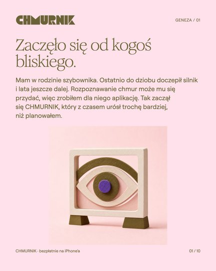

Z CIEKAWOŚCI NIEBA
Zaczęło się
od kogoś bliskiego.
Cała opowieść, w jednym miejscu.
Od pilota w rodzinie do atlasu, lekcji i wiatru na żaglach.
Gotowa na Instagram, LinkedIn i Facebook.
NOWY MONTAŻ / V2: 10 dynamicznych storek po 6–8 sekund. Szybkie cięcia, zbliżenia, prawdziwe gesty. Pełny tekst każdej storki stale na ekranie. Także 10 alternatywnych JPG · karuzela · LinkedIn · Facebook.
AKTUALIZACJA WWW / V3: całe posty na LinkedIn i Facebook zapraszają też do chmurnik.cloud. Facebook ma nową grafikę z domeną. Przyspieszone filmy, zatwierdzone teksty Stories i karuzela pozostają bez zmian.
W przeglądarce i na iPhonie.
LinkedIn i Facebook zapraszają przede wszystkim na chmurnik.cloud: bez konta i instalacji. Oba posty zachowują też link do App Store. Pełne teksty są niżej i w paczkach.
Stories nadal promują aplikację na iPhone’a. Poniższy adres dodaj jako prawdziwą naklejkę Link w Instagramie.
Naklejkę umieść w pustym miejscu pod demonstracją, przed małym podpisem. Nie zakrywaj tekstu ani zastrzeżeń. W JPG i MP4 nie ma imitacji klikalnego przycisku.
Wygodnie na iPhonie.
- Przy materiale wybierz Zapisz / udostępnij albo Zapisz film / udostępnij. W systemowym menu wybierz zapis obrazu lub wideo, jeśli jest dostępny.
- Alternatywa: Otwórz JPG i przytrzymaj obraz. Filmy pobierz do Plików, otwórz i wybierz Udostępnij → Zapisz wideo.
- ZIP otwórz w Plikach, żeby go rozpakować. Każda platforma ma osobną paczkę i gotowy tekst. Pliki w karuzeli i storkach są ponumerowane.
Filmy są bez dźwięku. Cała treść jest na ekranie; muzykę możesz dobrać podczas publikowania w Instagramie.
10 storek, jedna historia.
1080 × 1920 / 9:16Polecana wersja: 10 filmów MP4, kolejno 01–10, po 6–8 sekund. Sześć demonstracji i cztery montaże produktowe, bez pauz na czytanie. Każdy film pokazuje cały zatwierdzony tekst przez cały czas. JPG z tym samym numerem jest alternatywą, nie dodatkową storką. Muzykę dobierasz w Instagramie.
Instagram: karuzela.
10 PLANSZ / 1080 × 1350Jeden post z dziesięcioma zdjęciami, kolejno 01–10. Wybierz pionowy kadr 4:5 i zachowaj go dla wszystkich plansz. Opis jest poniżej w całości. Adres w opisie nie zastępuje naklejki Link; publikuj karuzelę razem z relacją lub dodaj link w profilu.
Pobierz karuzelę i opisLinkedIn: historia projektu.
POST + PDF / 10 STRONDodaj PDF jako dokument, nie jako zdjęcie. Proponowany tytuł dokumentu: CHMURNIK: zaczęło się od kogoś bliskiego. Dokument zawiera tę samą pełną historię i prawdziwe ekrany aplikacji na iPhone’a. Nowy post zaprasza także na chmurnik.cloud; wyjaśnia, że WWW ma własny układ.

Od jednej osoby do aplikacji.
10 stron. Tekst pozostaje tekstem, link do App Store na ostatniej stronie jest klikalny.
Pobierz dokument PDFFacebook: dla znajomych.
GRAFIKA + POSTDodaj poniższą grafikę z domeną i wklej cały post. Główny adres to chmurnik.cloud, a App Store jest dodatkową opcją. Nie trzeba łączyć fragmentów ani przepisywać opowieści.
Pobierz grafikę i postCałość, bez składania puzzli.
Pełne zatwierdzone teksty wszystkich dziesięciu storek oraz wszystkie naklejki Link. W filmach cały tekst danej storki pozostaje widoczny od pierwszej do ostatniej klatki; żadne zdanie nie znika przy zmianie ujęcia.